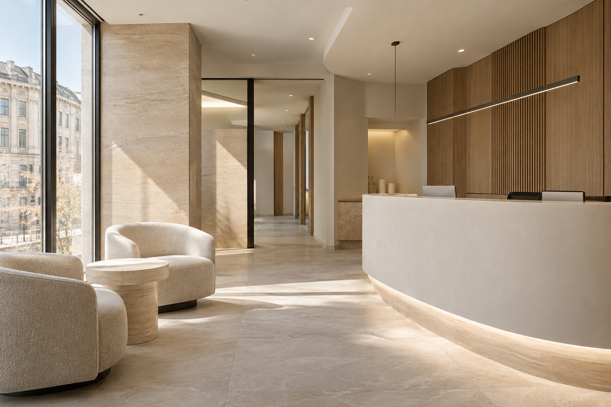

Montrez-nous,
si vous le souhaitez.
Deux à trois photos guidées depuis votre téléphone. Vous pouvez aussi continuer sans photo.
À votre choixVOTRE SOURIRE. VOTRE RYTHME.
Une dent à remplacer, une envie d’éclat ou une question. Découvrez vos possibilités, à votre rythme.
Explorer mes possibilités LE SOURIRE QUI VOUS RESSEMBLE.
LE SOURIRE QUI VOUS RESSEMBLE.Une envie de changer.
Le droit de prendre son temps.
Votre situation.
Le point de départ de chaque échange.
Vos questions.
Le temps de comprendre vos possibilités.
Votre décision.
Une démarche à votre rythme.
UNE ENVIE. PLUSIEURS POSSIBILITÉS.
Choisissez ce qui vous ressemble.
Nous vous guidons pour la suite.

UN LIEU PENSÉ POUR SE SENTIR À L’AISE · VUE ILLUSTRATIVELA CONFIANCE COMMENCE PAR L’ÉCOUTE.
Une démarche dentaire peut venir avec des questions. Sur le traitement, le confort, le budget. Vous pouvez commencer par en parler.
Une évaluation pour discuter des possibilités adaptées à votre situation.
Vos attentes et vos hésitations ont leur place dans la conversation.
LE PREMIER PAS PEUT ÊTRE SIMPLE.
Deux à trois photos guidées depuis votre téléphone. Vous pouvez aussi continuer sans photo.
À votre choixVotre besoin, votre échéance, vos questions de budget. Quelques clics pour préparer l’échange.
Trois questionsChoisissez un créneau souhaité. La réception doit ensuite le vérifier et le confirmer.
Sur confirmationSMILEPREVIEW IA™
Un aperçu visuel peut aider à mettre des mots sur vos attentes. Explorez cet exemple en déplaçant le curseur.
Exemple fictif, sans analyse de vos photos. Un aperçu ne constitue ni un diagnostic ni une prédiction du résultat. Les possibilités seront évaluées avec le dentiste.
VOS QUESTIONS ONT LEUR PLACE.
Vous n’avez pas à tout savoir.
Commençons par ce qui vous préoccupe.
Vous pouvez simplement décrire ce qui vous gêne ou ce que vous aimeriez comprendre. L’évaluation permettra de discuter des options avec le dentiste.
Non. Elles peuvent donner du contexte à votre demande. Vous pouvez continuer sans photo et vous pouvez retirer celles que vous ajoutez.
Non. L’exemple présenté est fictif et n’utilise pas vos photos. Un aperçu visuel ne remplace pas un examen et ne garantit ni la faisabilité ni le résultat d’un traitement.
Choisissez « J’ai besoin d’un devis ». Cela ne vous empêche pas de poursuivre. Les coûts de l’évaluation et du traitement devront être précisés par le cabinet avant votre engagement.
Vous proposez un créneau. La réception doit vérifier le planning, puis confirmer le rendez-vous ou proposer une autre heure. Les créneaux de ce site modèle sont illustratifs.
Le parcours prévoit une confirmation après validation par la réception, puis des rappels selon votre préférence de contact. Aucun SMS ni email réel n’est envoyé depuis cette démonstration.
ET SI ON COMMENÇAIT PAR VOUS ?
Vous n’avez pas besoin d’avoir toutes les réponses
pour commencer à poser vos questions.